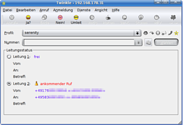

Twinkle
Dieser Artikel wurde für die folgenden Ubuntu-Versionen getestet:
Ubuntu 16.04 Xenial Xerus
Ubuntu 14.04 Trusty Tahr
Zum Verständnis dieses Artikels sind folgende Seiten hilfreich:
Twinkle  ist ein auf dem Qt-Toolkit basierendes Programm zur Internet-Telefonie (Voice-over-IP, kurz VoIP). Es wird nur ein SIP-Konto benötigt, welches häufig Bestandteil bei Angeboten von Internetprovidern ist. Von dem Funktionsangebot her ist es mit dem Programm Ekiga zu vergleichen.
ist ein auf dem Qt-Toolkit basierendes Programm zur Internet-Telefonie (Voice-over-IP, kurz VoIP). Es wird nur ein SIP-Konto benötigt, welches häufig Bestandteil bei Angeboten von Internetprovidern ist. Von dem Funktionsangebot her ist es mit dem Programm Ekiga zu vergleichen.
Twinkle bietet alle Funktionen, die man von einem Softphone erwartet:

zwei separate Telefonleitungen
Annahme, Ablehnung, Parken und Umleitung von Gesprächen
Kurzmitteilungen (mit der Version 1.1)
Konferenzschaltungen
Stummschaltung
Anrufbeantworter
Diverse Sprachcodecs zu Wahl
Verschlüsselung von Gesprächen
Weitere Funktionen sind auf der Homepage zu finden.
Installation¶
Twinkle ist in den offiziellen Paketquellen enthalten. Zur Installation [1] ist folgendes Paket notwendig:
twinkle (universe)
 mit apturl
mit apturl
Paketliste zum Kopieren:
sudo apt-get install twinkle
sudo aptitude install twinkle
Anschließend kann es unter "K-Menü -> Internet -> Twinkle" gestartet werden. Außerdem ist es jederzeit im Systembereich des Kickers zu finden. Über einen  -Klick auf das Icon lassen sich alle Funktionen aufrufen, ohne die Oberfläche zu öffnen.
-Klick auf das Icon lassen sich alle Funktionen aufrufen, ohne die Oberfläche zu öffnen.
Einrichtung¶
Beim ersten Start des Programm erscheint eine Abfrage über die Verbindungsdaten des SIP Service Provider. Um SIP benutzen zu können, ist ein Account bei einem SIP-Anbieter zwingend erforderlich. Eine Auswahl einiger Anbieter und nähere Erläuterung ist unter Internet-Telefonie-Anbieter zu finden.
Nun erscheint die Benutzeroberfläche von Twinkle. Über die Menüleiste "Bearbeiten -> Benutzerprofil" lassen sich weitere Einstellungen vornehmen. Wichtig ist hier der Menüpunkt "SIP Server" auf der linken Seite. Hier muss unter "Registrar" wieder die Adresse des SIP-Servers eingetragen werden (z.B. sip.beispielanbieter.de) und das Kreuz bei "Bei Profilstart anmelden" gesetzt werden. Selbiges gilt für den Outbound-Proxy. Fehlt diese Einstellungen, so sind zwar ausgehende Gespräche möglich, aber keine eingehenden Anrufe.
Die restlichen Einstellungen passen im Normalfall. Mikrofoneinstellungen, Ändern der Klingeltöne und weitere Anpassungen können hier bei Bedarf vorgenommen werden.
Benutzung¶
| Tastenkürzel | |
| Taste | Funktion |
| F5 | Anruf tätigen |
| F9 | Gesprächshistorie |
| F11 | Anrufbeantworter |
| F12 | Wahlwiederholung |
Möchte man ein Telefongespräch führen, so klickt man auf "Anruf", trägt dort die Nummer ein (oder benutzt das Icon, um die Nummer über Kontact zu bekommen) und klickt auf "OK". Schon wird die Nummer gewählt und das Gespräch kommt zustande. Falls dieses nicht funktionieren sollte, ist darauf zu achten, ob man wirklich mit dem SIP-Server verbunden ist. Falls nicht, kann in der Menüleiste unter "Anmeldung -> Anmelden" dies erledigt werden.
Wird man angerufen, so erscheint im Tray eine Meldung, wer gerade anruft. Dort lässt sich das Gespräch annehmen, oder ablehnen.
Weitere Funktionen wie Konferenzen, Stummschaltung und weitere sind über die Menüleiste bzw. die Icons zu erreichen und leicht verständlich zu bedienen.
Per Kommandozeile steuern¶
Zusätzlich lässt sich Twinkle per Kommandozeile [2] steuern. So lassen sich z.B. Anrufe annehmen oder ablehnen. Läuft Twinkle zu diesem Zeitpunkt bereits, wird der Befehl ausschließlich ausgeführt, Twinkle startet also nicht doppelt.
Einen Anruf annehmen kann man z.B. mittels
twinkle --cmd answer
Weitere Befehle zum Steuern von Twinkle führt twinkle --help auf.
- Erstellt mit Inyoka
-
 2004 – 2017 ubuntuusers.de • Einige Rechte vorbehalten
2004 – 2017 ubuntuusers.de • Einige Rechte vorbehalten
Lizenz • Kontakt • Datenschutz • Impressum • Serverstatus -
Serverhousing gespendet von